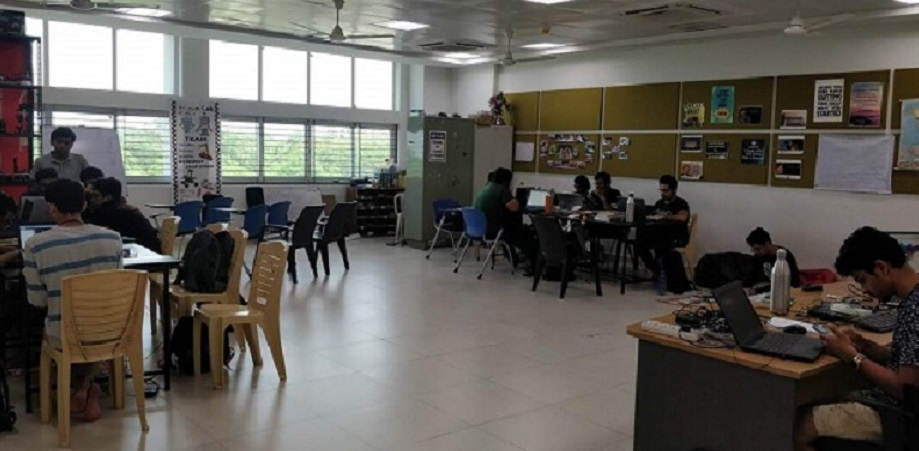
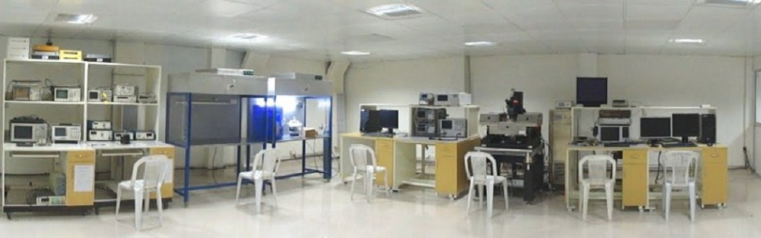
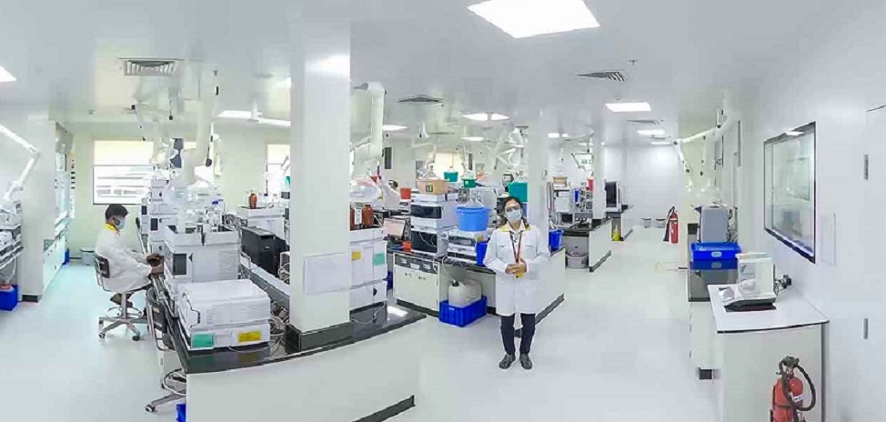

IvLabs serves as a platform for students from different engineering backgrounds to collaborate and work together with the utmost team spirit and avidity to bring innovative ideas into reality. They strive to study and improve technologies that advance the fields of robotics and AI. They use their cross-domain knowledge, to create and innovate. IvLabs teaches and inspires new students through workshops and mentor-based programs, transferring knowledge and creating new leaders to propel innovation.
Recommended: Check out their website to know more.
The most familiar form of energy in our daily lives is electrical energy. The branch of engineering which deals with producing, managing and utilizing this energy, is referred as electrical engineering. This field of engineering was introduced in an organized manner in the mid of 19th century. Interest in this field of study grew after the invention of electricity. It was June 1752 when Benjamin Franklin first tried to catch electricity from clouds during a heavy storm with the help of a flying kite. This was the beginning and to date still we are trying to manage this energy.
Recommended: Visit the lab within campus to see witness its beauty.
The Lab is based on the idea that lab experiments can be taught using the Internet, more efficiently and less expensively. The labs can also be made available to students with no access to physical labs or where equipment is not available owing to being scarce or costly. This helps them compete with students in better equipped schools and bridges the digital divide and geographical distances. The experiments can be accessed anytime and anywhere, overcoming the constraints on time felt when having access to the physical lab for only a short period of time.
Recommended: Visit the lab within campus to see witness its beauty.
